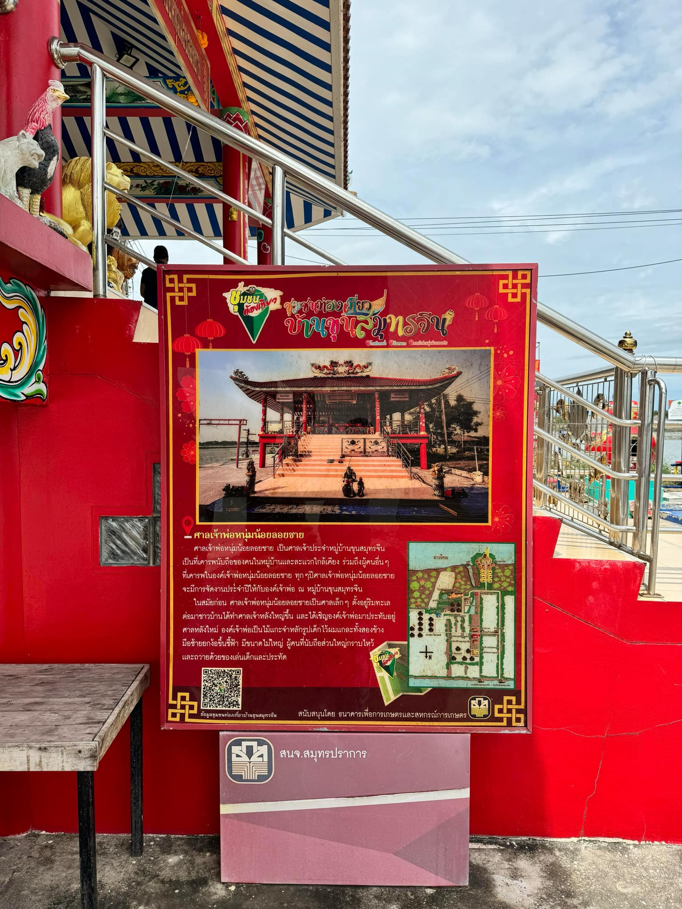

ศาลเจ้าพ่อหนุ่มน้อยลอยชาย
เจ้าพ่อหนุ่มน้อยลอยชายเป็นไม้แกะสลักรูปเด็กจีนไว้แกละสองข้าง ชาวประมงพบที่ไปจับปลาในทะเลพบไม้แกะจำหลักนี้ติดอวนมา จึงโยนทิ้งไป แล้วไปลากอวนต่อในที่อื่นก็ได้พบไม้แกะจำหลักนี้ติดอวนขึ้นมาอีก ชาวบ้านจึงนำมาเก็บไว้ที่ศาลเจ้าริมฝั่งทะเล ศาลเจ้าพ่อหนุ่มน้อยลอยชาย มีความศักดิ์สิทธิ์มากโดยเฉพาะเรื่องการเรียน และเจ้าพ่อนั้นจะให้โชคลาภกับคนภายนอกหมู่บ้านเป็นส่วนใหญ่ ในวันขึ้น 12-13 ค่ำเดือน 2 ของทุกปี จะมีการจัดงานประเพณีประจำปี ชาวบ้านจะนำของมาถวาย ขอพร มีการจัดการการแสดงต่างๆ เช่น หนังกลางแปลง ลิเก และเปิดโรงทานให้ผู้มาเยี่ยมเยือน
Back
